Content
- Theory :
- OLS regressions : diagnostics
- Interactions in linear regressions
- Non-linear regressions (logit/logistic regressions)
- Exercices
Session 3
| DV: Categorical | DV: Interval/Continuous | |
|---|---|---|
| IV: Categorical | Crosstabs / χ² Test | Compare Means / t-Test |
| IV: Interval/Continuous | Logistic Regression / Logits | Correlation / Scatter / Regression |
We saw : \[\begin{equation} Y_i = \beta_0 + \beta_1 X_i + \epsilon_i \end{equation}\]
Note about notations
Cross section : \[\begin{equation} Y_i = \beta_0 + \beta_1 X_i + \epsilon_i \end{equation}\]
Time series data : \[\begin{equation} Y_t = \beta_0 + \beta_1 X_t + \epsilon_t \end{equation}\]
Panel data : \[\begin{equation} Y_{it} = \beta_0 + \beta_1 X_{it} + \epsilon_{it} \end{equation}\]
Coming back to our example
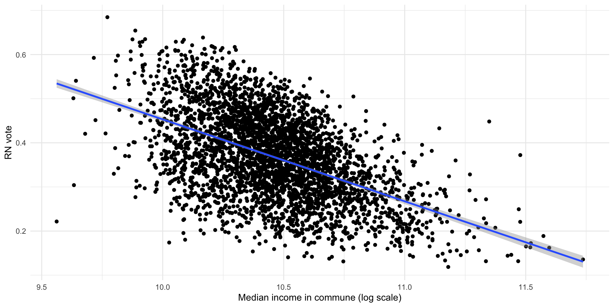
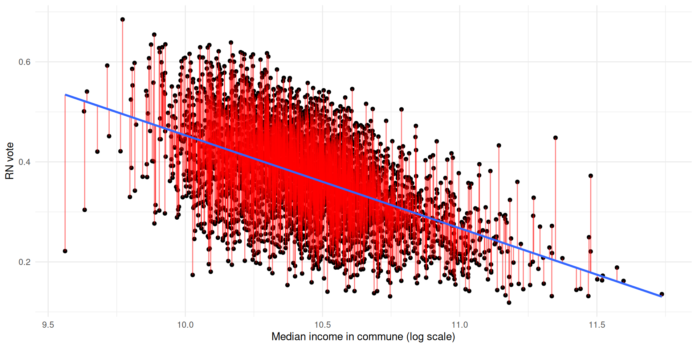
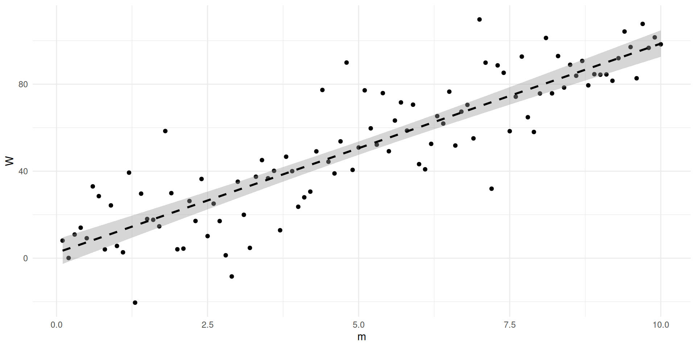
Call:
lm(formula = W ~ m, data = dat)
Residuals:
Min 1Q Median 3Q Max
-39.801 -9.124 0.010 8.043 41.285
Coefficients:
Estimate Std. Error t value Pr(>|t|)
(Intercept) 2.491 3.112 0.80 0.425
m 9.618 0.535 17.98 <2e-16 ***
---
Signif. codes: 0 '***' 0.001 '**' 0.01 '*' 0.05 '.' 0.1 ' ' 1
Residual standard error: 15.44 on 98 degrees of freedom
Multiple R-squared: 0.7674, Adjusted R-squared: 0.765
F-statistic: 323.3 on 1 and 98 DF, p-value: < 2.2e-16
Call:
lm(formula = W ~ m, data = dat)
Residuals:
Min 1Q Median 3Q Max
-165.77 -107.45 -20.56 89.47 306.10
Coefficients:
Estimate Std. Error t value Pr(>|t|)
(Intercept) -204.970 23.951 -8.558 1.61e-13 ***
m 101.193 4.118 24.576 < 2e-16 ***
---
Signif. codes: 0 '***' 0.001 '**' 0.01 '*' 0.05 '.' 0.1 ' ' 1
Residual standard error: 118.9 on 98 degrees of freedom
Multiple R-squared: 0.8604, Adjusted R-squared: 0.859
F-statistic: 604 on 1 and 98 DF, p-value: < 2.2e-16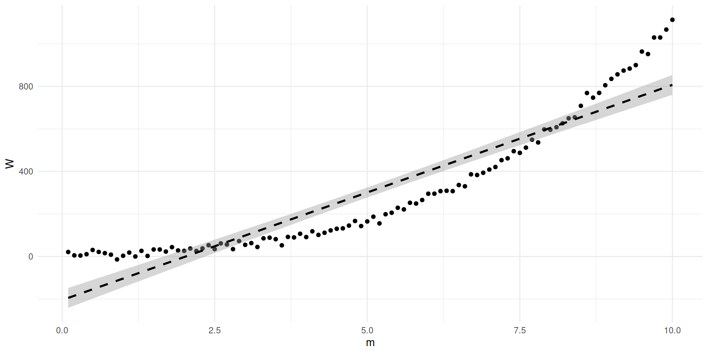
Call:
lm(formula = W ~ m, data = dat)
Residuals:
Min 1Q Median 3Q Max
-32.312 -6.320 0.214 3.365 28.302
Coefficients:
Estimate Std. Error t value Pr(>|t|)
(Intercept) -1.3693 2.2328 -0.613 0.541
m 9.9258 0.3838 25.859 <2e-16 ***
---
Signif. codes: 0 '***' 0.001 '**' 0.01 '*' 0.05 '.' 0.1 ' ' 1
Residual standard error: 11.08 on 98 degrees of freedom
Multiple R-squared: 0.8722, Adjusted R-squared: 0.8709
F-statistic: 668.7 on 1 and 98 DF, p-value: < 2.2e-16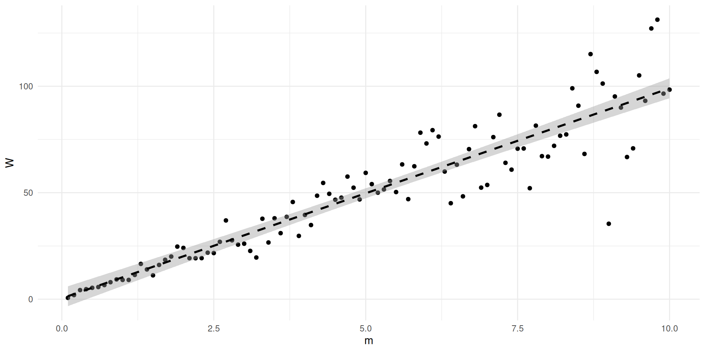
library(performance)
library(MASS)
library(stargazer)
x <- sample(1:1000, 1000, replace = "TRUE")
y <- 10*x + rnorm(1000, 0, 10)
y <- data.frame(y, x)
model1 <- lm(y ~ x, data = y)
y <- 10*x + rnorm(1000, 0, 10*(x))
y <- data.frame(y, x)
model2 <- lm(y ~ x, data = y)
y %>%
ggplot(aes(x = x, y = y)) + geom_point()+
geom_smooth(method = "lm", linetype = "dashed", color = "black", se = TRUE, linewidth = 1, alpha = 0.4)+
theme_minimal()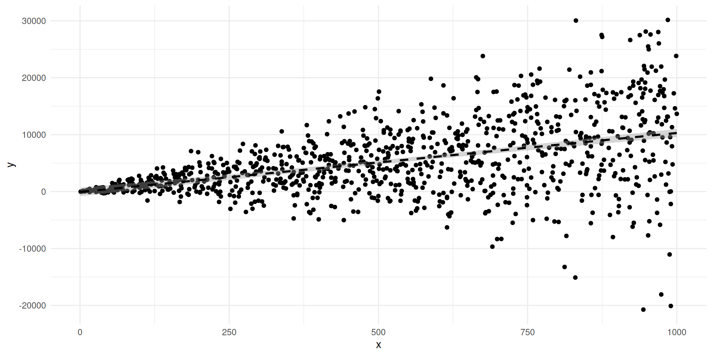
[1] 5.35649e-14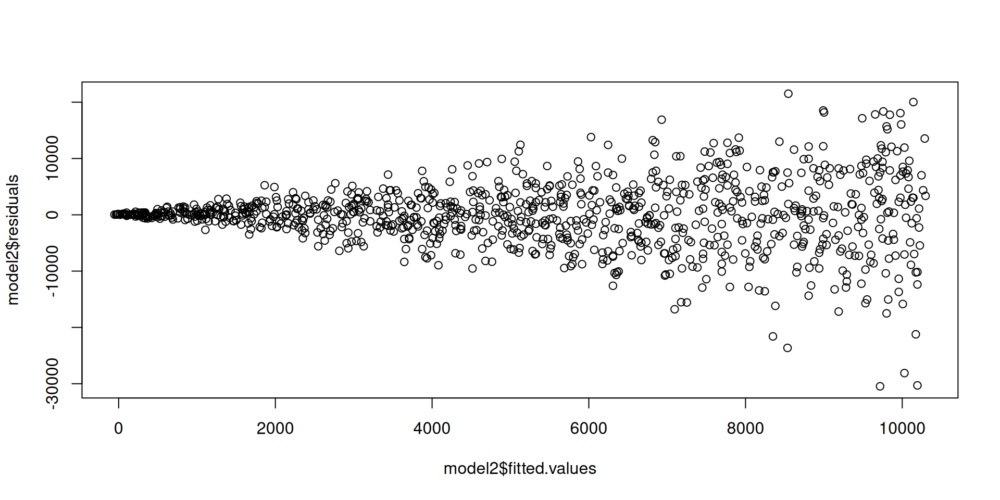
Warning: Heteroscedasticity (non-constant error variance) detected (p < .001).
=====================================================================
Dependent variable:
--------------------------------------
y
OLS robust
linear
(1) (2) (3)
---------------------------------------------------------------------
x 9.999*** 10.361*** 10.596***
(0.001) (0.643) (0.541)
Constant 0.367 -64.031 -111.392
(0.657) (380.101) (320.165)
---------------------------------------------------------------------
Observations 1,000 1,000 1,000
R2 1.000 0.207
Adjusted R2 1.000 0.206
Residual Std. Error (df = 998) 10.161 5,882.820 3,988.660
F Statistic (df = 1; 998) 81,099,509.000*** 259.778***
=====================================================================
Note: *p<0.1; **p<0.05; ***p<0.01\[\begin{equation}
W_i = \gamma + \alpha m_i + \beta V_i + \epsilon_i
\end{equation}\] - You can use check_collinearity(model) - variance inflation factor (VIF) : VIF > 10 is highly colinear
Call:
lm(formula = y ~ m)
Residuals:
Min 1Q Median 3Q Max
-33.348 -8.185 -0.711 7.229 27.163
Coefficients:
Estimate Std. Error t value Pr(>|t|)
(Intercept) -0.7584 2.2105 -0.343 0.732
m 9.9141 0.3800 26.088 <2e-16 ***
---
Signif. codes: 0 '***' 0.001 '**' 0.01 '*' 0.05 '.' 0.1 ' ' 1
Residual standard error: 10.97 on 98 degrees of freedom
Multiple R-squared: 0.8741, Adjusted R-squared: 0.8728
F-statistic: 680.6 on 1 and 98 DF, p-value: < 2.2e-16
Call:
lm(formula = y ~ m + v)
Residuals:
Min 1Q Median 3Q Max
-33.327 -7.804 -0.782 7.123 26.686
Coefficients:
Estimate Std. Error t value Pr(>|t|)
(Intercept) -7.326e-01 2.223e+00 -0.330 0.742
m 1.350e+01 1.347e+01 1.002 0.319
v -3.203e+04 1.203e+05 -0.266 0.791
Residual standard error: 11.02 on 97 degrees of freedom
Multiple R-squared: 0.8742, Adjusted R-squared: 0.8716
F-statistic: 337.1 on 2 and 97 DF, p-value: < 2.2e-16# Check for Multicollinearity
High Correlation
Term VIF VIF 95% CI adj. VIF Tolerance Tolerance 95% CI
m 1243.97 [858.74, 1802.22] 35.27 8.04e-04 [0.00, 0.00]
v 1243.97 [858.74, 1802.22] 35.27 8.04e-04 [0.00, 0.00]
Call:
lm(formula = far_right_relvotes ~ pagri + pindp + pcadr + ppint +
pempl + pouvr + sup, data = elections2024 %>% filter(dens ==
"Urbain intermédiaire"))
Residuals:
Min 1Q Median 3Q Max
-0.260354 -0.059268 -0.003561 0.056865 0.289011
Coefficients:
Estimate Std. Error t value Pr(>|t|)
(Intercept) 4.033e-01 3.712e-02 10.864 < 2e-16 ***
pagri -2.048e-01 8.227e-02 -2.489 0.01286 *
pindp -7.603e-02 4.727e-02 -1.608 0.10784
pcadr -3.060e-01 3.953e-02 -7.740 1.29e-14 ***
ppint -2.757e-02 3.936e-02 -0.700 0.48373
pempl 8.244e-02 4.260e-02 1.935 0.05307 .
pouvr 1.284e-01 4.107e-02 3.127 0.00178 **
sup -1.545e-05 9.337e-07 -16.550 < 2e-16 ***
---
Signif. codes: 0 '***' 0.001 '**' 0.01 '*' 0.05 '.' 0.1 ' ' 1
Residual standard error: 0.08299 on 3484 degrees of freedom
Multiple R-squared: 0.2886, Adjusted R-squared: 0.2871
F-statistic: 201.9 on 7 and 3484 DF, p-value: < 2.2e-16
Call:
lm(formula = far_right_relvotes ~ pcadr + pouvr + dens, data = elections2024)
Residuals:
Min 1Q Median 3Q Max
-0.45234 -0.07219 -0.00078 0.07137 0.46945
Coefficients:
Estimate Std. Error t value Pr(>|t|)
(Intercept) 0.386080 0.001166 331.122 <2e-16 ***
pcadr -0.091681 0.004756 -19.275 <2e-16 ***
pouvr 0.066257 0.003320 19.956 <2e-16 ***
densUrbain dense -0.116795 0.004147 -28.162 <2e-16 ***
densUrbain intermédiaire -0.016403 0.001924 -8.526 <2e-16 ***
---
Signif. codes: 0 '***' 0.001 '**' 0.01 '*' 0.05 '.' 0.1 ' ' 1
Residual standard error: 0.1067 on 34038 degrees of freedom
(357 observations deleted due to missingness)
Multiple R-squared: 0.05972, Adjusted R-squared: 0.05961
F-statistic: 540.4 on 4 and 34038 DF, p-value: < 2.2e-16# Check for Multicollinearity
Low Correlation
Term VIF VIF 95% CI adj. VIF Tolerance Tolerance 95% CI
pagri 1.25 [1.20, 1.30] 1.12 0.80 [0.77, 0.83]
pindp 3.35 [3.17, 3.54] 1.83 0.30 [0.28, 0.32]
sup 1.07 [1.04, 1.12] 1.03 0.94 [0.89, 0.96]
Moderate Correlation
Term VIF VIF 95% CI adj. VIF Tolerance Tolerance 95% CI
pcadr 8.98 [8.44, 9.56] 3.00 0.11 [0.10, 0.12]
ppint 8.02 [7.54, 8.54] 2.83 0.12 [0.12, 0.13]
pempl 8.39 [7.89, 8.93] 2.90 0.12 [0.11, 0.13]
pouvr 8.84 [8.31, 9.41] 2.97 0.11 [0.11, 0.12]# Check for Multicollinearity
Low Correlation
Term VIF VIF 95% CI adj. VIF Tolerance Tolerance 95% CI
pcadr 1.10 [1.09, 1.11] 1.05 0.91 [0.90, 0.92]
pouvr 1.08 [1.07, 1.09] 1.04 0.93 [0.92, 0.94]
dens 1.03 [1.02, 1.04] 1.01 0.97 [0.96, 0.98]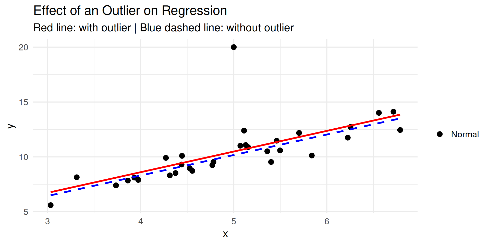
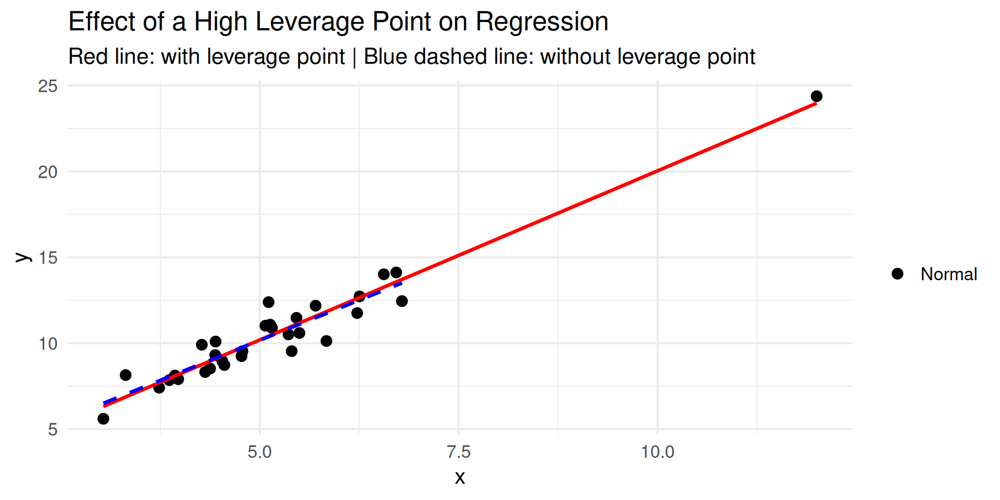
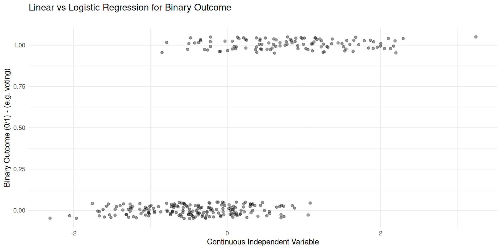
\[\begin{equation} Y_i = (\beta_0 + \beta_1 X_1 + \beta_2 X_2 + \beta_3 X_3 +...+\beta_k X_k + \epsilon)_i \end{equation}\]
\[\begin{equation} Y = \beta_0 + \beta_1 X_1 + \beta_2 X_2 + \gamma X_1 X_2 + ... + \epsilon \end{equation}\]
lm(Y ~ X_1+X_2 + X_1*X_2)ggpredict() to visualise and interpretelections2024 <- elections2024 %>% filter(dens == "Urbain intermédiaire") %>%
mutate(petr = etranger/pop, psup = sup/pop, pnodip = nodip/pop, log_revmoyfoy = log(revmoyfoy))
model3 <- lm(data = elections2024,
far_right_relvotes ~ log_revmoyfoy +psup + log_revmoyfoy*psup +petr+ pagri+pouvr+ pcadr+age+log(prixbien)+pempl+ppint+pindp+psup+pnodip)
library(ggeffects)
ggpredict(model3, terms = c("log_revmoyfoy", "psup")) |>
as_tibble() |>
mutate(
group = factor(
group,
levels = c("0.14", "0.23", "0.32"),
labels = c(
"Low share of higher education (14%)",
"Medium share of higher education (23%)",
"High share of higher education (32%)"
)
)
) |>
ggplot(aes(x, predicted, color = group, fill = group)) +
geom_line(linewidth = 1) +
geom_ribbon(aes(ymin = conf.low, ymax = conf.high), alpha = 0.2) +
labs(
color = "Share with higher education",
fill = "Share with higher education"
)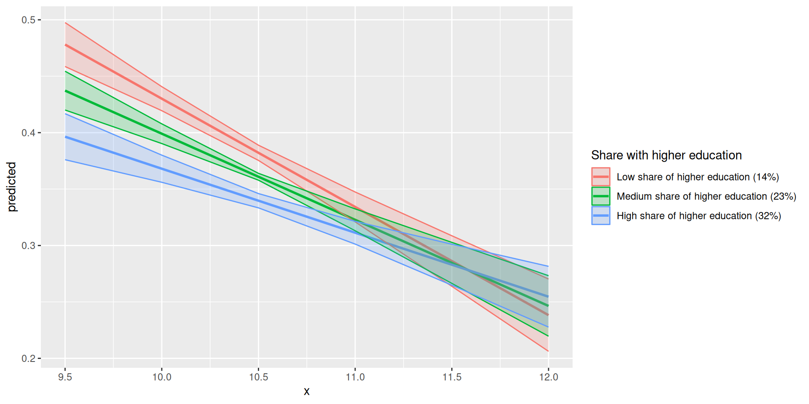
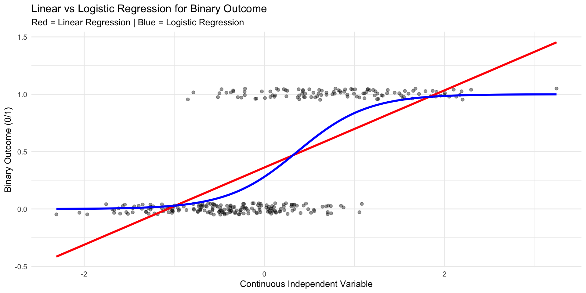
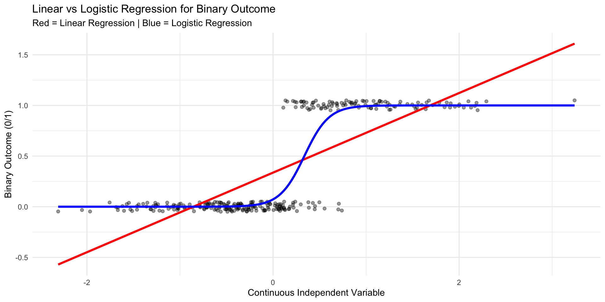

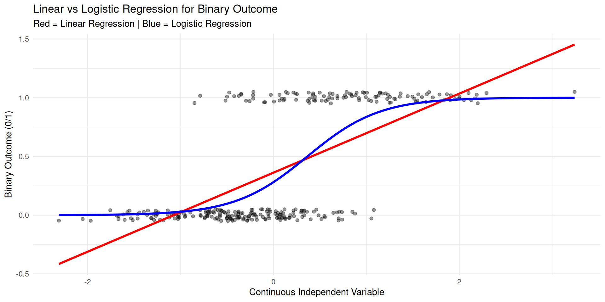
glm:
Call:
glm(formula = binary_var ~ continuous_var, family = binomial,
data = data)
Coefficients:
Estimate Std. Error z value Pr(>|z|)
(Intercept) -0.4420 0.1164 -3.796 0.000147 ***
continuous_var 1.2479 0.1507 8.280 < 2e-16 ***
---
Signif. codes: 0 '***' 0.001 '**' 0.01 '*' 0.05 '.' 0.1 ' ' 1
(Dispersion parameter for binomial family taken to be 1)
Null deviance: 542.20 on 399 degrees of freedom
Residual deviance: 446.51 on 398 degrees of freedom
AIC: 450.51
Number of Fisher Scoring iterations: 4# Predicted probabilities of binary_var
continuous_var | Predicted | 95% CI
---------------------------------------
-3 | 0.01 | 0.01, 0.04
-2 | 0.05 | 0.03, 0.09
-1 | 0.16 | 0.11, 0.22
0 | 0.39 | 0.34, 0.45
1 | 0.69 | 0.61, 0.76
2 | 0.89 | 0.81, 0.93
3 | 0.96 | 0.92, 0.98# this is the simplest way of plotting this
ggplot(predicted_probs, aes(x = x, y = predicted)) +
# our graph is more or less a line, so geom_line() applies
geom_line(color = "blue", size = 1) +
geom_point() +
# geom_ribbon() with the values that ggpredict() provided for the confidence
# intervals then gives
# us a shade around the geom_()line as CIs
geom_ribbon(aes(ymin = conf.low, ymax = conf.high), fill = "grey", alpha = 0.3) +
labs(
title = "Predicted Probability of Voting by Political Interest",
x = "Political Interest",
y = "Predicted Probability of Voting"
) +
theme_minimal() +
theme(
plot.title = element_text(size = 14, face = "bold", hjust = 0.5),
axis.title = element_text(size = 12),
axis.text = element_text(size = 10)
)Rows: 465
Columns: 7
$ test_score <dbl> 49.24914, 71.08647, 73.70798, 67.41474, 63.14723, 9…
$ treatment <int> 1, 1, 0, 1, 0, 1, 0, 0, 0, 0, 1, 0, 1, 1, 0, 0, 1, …
$ income <int> 20229, 38976, 32547, 16443, 24793, 44863, 8160, 261…
$ parent_edu <int> 14, 12, 11, 15, 16, 16, 9, 10, 7, 11, 13, 12, 18, 1…
$ school_funding <int> 4197, 13112, 11559, 2435, 8625, 8788, 1941, 5006, 1…
$ class_size <int> 33, 33, 22, 24, 17, 21, 18, 27, 22, 19, 23, 19, 27,…
$ teacher_experience <int> 1, 5, 19, 17, 3, 9, 15, 14, 2, 14, 8, 19, 11, 14, 1… test_score treatment income parent_edu
Min. : 5.726 Min. :0.0000 Min. : 2000 Min. : 2.00
1st Qu.:63.036 1st Qu.:0.0000 1st Qu.:23192 1st Qu.:10.00
Median :74.404 Median :0.0000 Median :28907 Median :12.00
Mean :71.203 Mean :0.4473 Mean :29090 Mean :11.77
3rd Qu.:82.192 3rd Qu.:1.0000 3rd Qu.:35164 3rd Qu.:14.00
Max. :99.968 Max. :1.0000 Max. :56628 Max. :20.00
school_funding class_size teacher_experience
Min. : 445 Min. :15.00 Min. : 0.00
1st Qu.: 6521 1st Qu.:22.00 1st Qu.: 8.00
Median : 8914 Median :25.00 Median :12.00
Mean : 8836 Mean :24.93 Mean :12.18
3rd Qu.:10889 3rd Qu.:28.00 3rd Qu.:16.00
Max. :20351 Max. :39.00 Max. :29.00 treatment n
1 0 257
2 1 208 mean_score sd_score min_score max_score mean_income
1 71.20339 17.8784 5.725896 99.96766 29090.45
Call:
lm(formula = test_score ~ treatment, data = data)
Residuals:
Min 1Q Median 3Q Max
-69.93 -7.79 3.04 11.31 31.23
Coefficients:
Estimate Std. Error t value Pr(>|t|)
(Intercept) 67.603 1.088 62.133 < 2e-16 ***
treatment 8.049 1.627 4.948 1.05e-06 ***
---
Signif. codes: 0 '***' 0.001 '**' 0.01 '*' 0.05 '.' 0.1 ' ' 1
Residual standard error: 17.44 on 463 degrees of freedom
Multiple R-squared: 0.05022, Adjusted R-squared: 0.04817
F-statistic: 24.48 on 1 and 463 DF, p-value: 1.053e-06
Call:
lm(formula = test_score ~ treatment + income + parent_edu + class_size +
teacher_experience + school_funding, data = data)
Residuals:
Min 1Q Median 3Q Max
-63.995 -6.372 2.599 10.133 28.789
Coefficients:
Estimate Std. Error t value Pr(>|t|)
(Intercept) 41.8099645 5.8479179 7.150 3.46e-12 ***
treatment 3.9206510 1.5928098 2.461 0.01420 *
income 0.0007223 0.0001238 5.836 1.01e-08 ***
parent_edu 1.2591914 0.2572074 4.896 1.36e-06 ***
class_size -0.3782983 0.1575814 -2.401 0.01676 *
teacher_experience 0.4278321 0.1335590 3.203 0.00145 **
school_funding -0.0004489 0.0003293 -1.363 0.17355
---
Signif. codes: 0 '***' 0.001 '**' 0.01 '*' 0.05 '.' 0.1 ' ' 1
Residual standard error: 16.14 on 458 degrees of freedom
Multiple R-squared: 0.1958, Adjusted R-squared: 0.1853
F-statistic: 18.59 on 6 and 458 DF, p-value: < 2.2e-16
===================================================================
Dependent variable:
-----------------------------------------------
test_score
(1) (2)
-------------------------------------------------------------------
treatment 8.049*** 3.921**
(1.627) (1.593)
income 0.001***
(0.0001)
parent_edu 1.259***
(0.257)
class_size -0.378**
(0.158)
teacher_experience 0.428***
(0.134)
school_funding -0.0004
(0.0003)
Constant 67.603*** 41.810***
(1.088) (5.848)
-------------------------------------------------------------------
Observations 465 465
R2 0.050 0.196
Adjusted R2 0.048 0.185
Residual Std. Error 17.443 (df = 463) 16.137 (df = 458)
F Statistic 24.480*** (df = 1; 463) 18.585*** (df = 6; 458)
===================================================================
Note: *p<0.1; **p<0.05; ***p<0.01# Check for Multicollinearity
Low Correlation
Term VIF VIF 95% CI adj. VIF Tolerance Tolerance 95% CI
treatment 1.12 [1.05, 1.30] 1.06 0.89 [0.77, 0.95]
income 2.15 [1.89, 2.49] 1.47 0.46 [0.40, 0.53]
parent_edu 1.06 [1.01, 1.33] 1.03 0.95 [0.75, 0.99]
class_size 1.02 [1.00, 2.33] 1.01 0.98 [0.43, 1.00]
teacher_experience 1.01 [1.00, 5617.22] 1.00 0.99 [0.00, 1.00]
school_funding 2.09 [1.84, 2.41] 1.44 0.48 [0.41, 0.54]OK: Error variance appears to be homoscedastic (p = 0.639).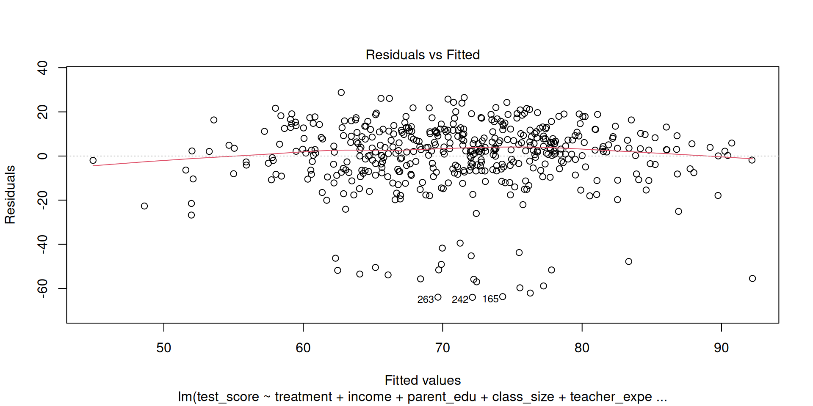
Call: rlm(formula = test_score ~ treatment + income + parent_edu +
class_size + teacher_experience + school_funding, data = data)
Residuals:
Min 1Q Median 3Q Max
-67.1722 -8.1904 0.6163 7.4985 26.5693
Coefficients:
Value Std. Error t value
(Intercept) 42.9202 4.4358 9.6760
treatment 4.0703 1.2082 3.3690
income 0.0007 0.0001 7.7257
parent_edu 1.1670 0.1951 5.9819
class_size -0.3958 0.1195 -3.3115
teacher_experience 0.4962 0.1013 4.8976
school_funding -0.0003 0.0002 -1.1221
Residual standard error: 11.7 on 458 degrees of freedom
================================================================
Dependent variable:
---------------------------------
test_score
OLS robust
linear
(1) (2)
----------------------------------------------------------------
treatment 3.921** 4.070***
(1.593) (1.208)
income 0.001*** 0.001***
(0.0001) (0.0001)
parent_edu 1.259*** 1.167***
(0.257) (0.195)
class_size -0.378** -0.396***
(0.158) (0.120)
teacher_experience 0.428*** 0.496***
(0.134) (0.101)
school_funding -0.0004 -0.0003
(0.0003) (0.0002)
Constant 41.810*** 42.920***
(5.848) (4.436)
----------------------------------------------------------------
Observations 465 465
R2 0.196
Adjusted R2 0.185
Residual Std. Error (df = 458) 16.137 11.696
F Statistic 18.585*** (df = 6; 458)
================================================================
Note: *p<0.1; **p<0.05; ***p<0.01# Predicted values of test_score
income | Predicted | 95% CI
---------------------------------
2000 | 50.04 | 43.32, 56.76
4000 | 51.48 | 45.23, 57.74
6000 | 52.93 | 47.13, 58.73
8000 | 54.37 | 49.03, 59.72
10000 | 55.82 | 50.92, 60.72
12000 | 57.26 | 52.80, 61.72
Adjusted for:
* treatment = 0.00
* parent_edu = 12.00
* class_size = 25.00
* teacher_experience = 12.00
* school_funding = 8914.00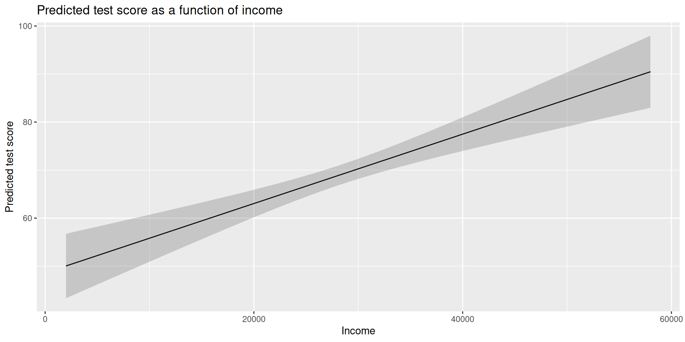